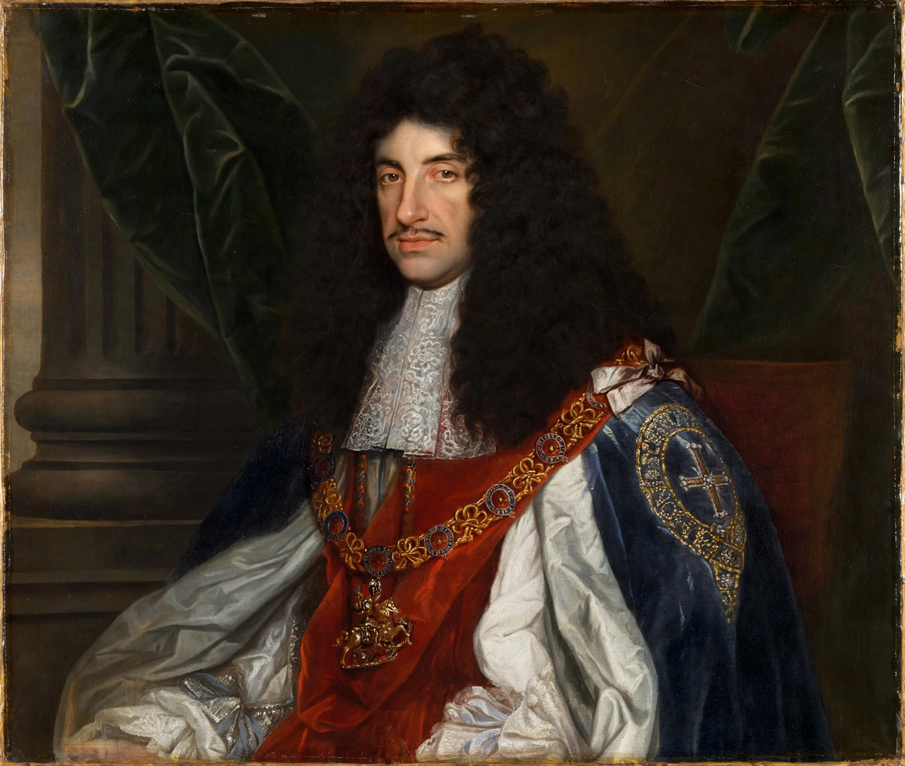

| Charles II | |
|---|---|
| Reign | 29 May 1660 – 6 February 1685 |
| Coronation | 23 April 1661 |
| Born | 29 May 1630, St James's Palace, London |
| Died | 6 February 1685 (aged 54), Palace of Whitehall, London |
| Spouse | Catherine of Braganza |
| Father | Charles I |
| Mother | Henrietta Maria of France |
| Successor | James II |

Charles II (29 May 1630 – 6 February 1685) was King of Scotland from 1649 until 1651 and King of England, Scotland and Ireland from the 1660 Restoration of the monarchy until his death in 1685. He was the eldest surviving son of Charles I, who was executed in 1649 during the English Civil War; Charles II spent a decade in exile, narrowly escaping capture after his defeat at the Battle of Worcester in 1651, famously hiding in the Royal Oak at Boscobel.
Invited back by the Convention Parliament, Charles was crowned in 1661. His reign — the era of the "Merry Monarch" — saw the reopening of theatres, the founding of the Royal Society, but also the Great Plague of 1665 and the Great Fire of London in 1666, wars with the Dutch Republic, and growing tension with Parliament over his secret dealings with Louis XIV (including the secret Treaty of Dover, 1670). The Popish Plot crisis of 1678–1681 and the Exclusion Crisis, an attempt to bar his Catholic brother James from the succession, convulsed politics, and the terms Whig and Tory emerged. Charles ruled without Parliament for his final four years.
Charles died in February 1685 after an apoplectic fit, converting to Catholicism on his deathbed. He had no legitimate children; he acknowledged at least a dozen illegitimate children, including James Scott, Duke of Monmouth. He was succeeded by his brother as James II. The organisation of the great Royal Households was substantially shaped by his restored court.